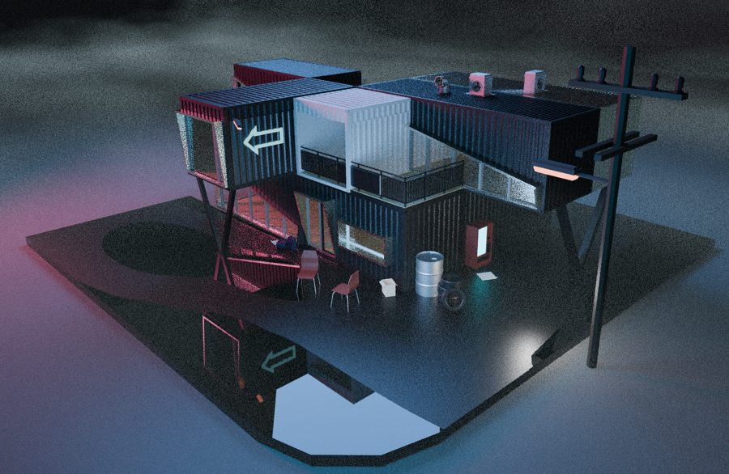
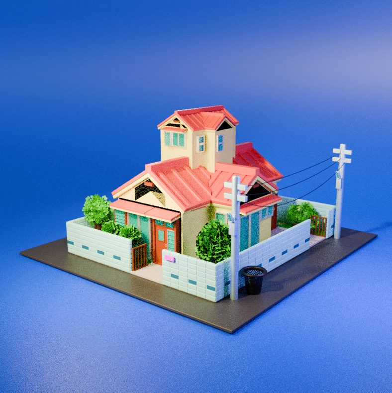
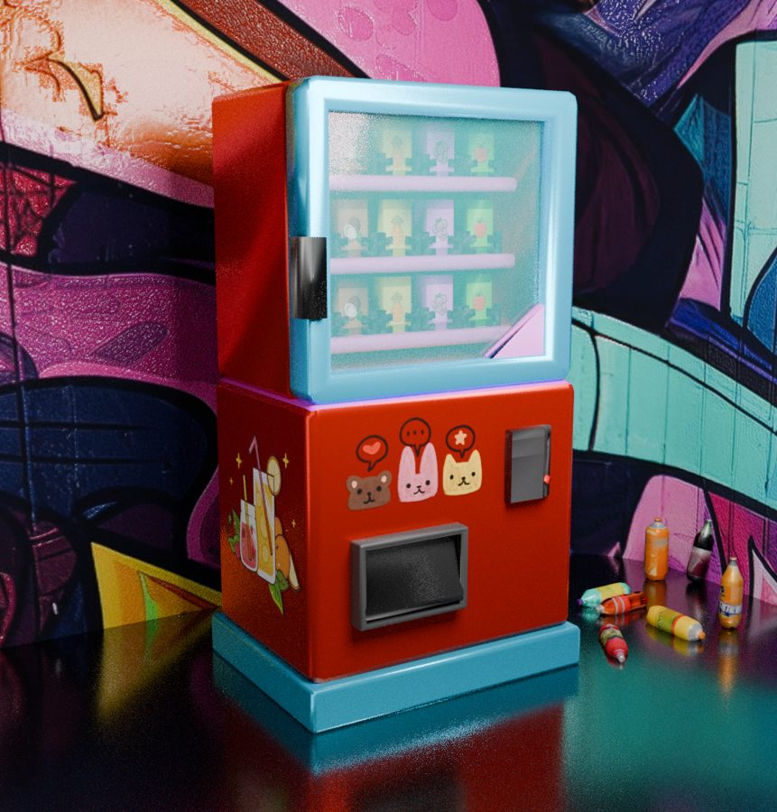

Дом из контейнеров
Ночная сцена в Blender: модульный дом, мебель, бочки, столб и неоновое освещение.
3D-моделирование и дизайн
Создаю 3D-модели в Blender и учусь показывать свои работы в сети.
Связаться со мнойМне 26 лет, я живу в Санкт-Петербурге и учусь на направлении «Прикладная информатика в дизайне». Больше всего мне нравится 3D-моделирование: от первого наброска формы до готового рендера. Параллельно осваиваю веб-вёрстку и JavaScript, чтобы показывать свои работы в сети.

Ночная сцена в Blender: модульный дом, мебель, бочки, столб и неоновое освещение.

Стилизованная модель дома с красной крышей, забором, кустами и столбами с проводами.

Модель автомата с наклейками и напитками на фоне граффити.
Этот сайт: Mobile First вёрстка, светлая и чёрная темы, фильтр проектов, форма с проверкой.
Код на GitHub